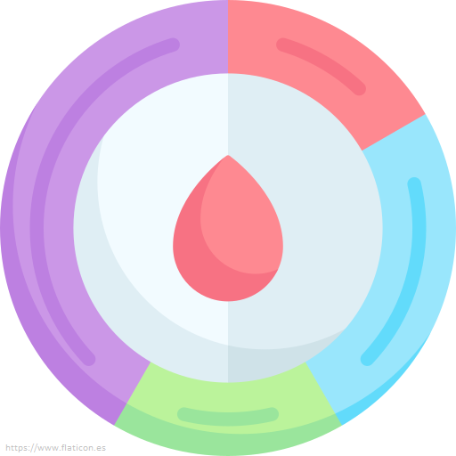

Generalidades del Ciclo Menstrual

El ciclo menstrual es el tiempo que transcurre entre una
menstruación y otra. Cuenta desde el inicio de la menstruación hasta la
siguiente
menstruación. Se pueden tener ciclos menstruales de 28, 24, 30 o más
días.
Después de la primera regla (menarquia), los ciclos menstruales duran
alrededor de
21 a 45 días. Existen dos fases durante el ciclo menstrual:
- Primera fase del ciclo menstrual: Los niveles de estrógeno aumentan y hacen que la capa que recubre el útero aumente de tamaño y se ensanche, la hormona foliculoestimulante hace que un óvulo empiece a madurar en uno de los ovarios, aproximadamente en el día 14 de un ciclo de la menstruación normal de 28 días y la hormona luteinizante aumenta su producción provocando que el óvulo se desprenda del ovario (ovulación).
- Segunda fase del ciclo menstrual: El óvulo empieza a viajar por medio de la trompa de Falopio dirigiéndose al útero, la progesterona aumenta sus niveles ayudando a preparar el recubrimiento del útero para el embarazo, pero si el óvulo no es fertilizado por un espermatozoide este se disuelve y es liberado durante el ciclo menstrual.
Fases del Ciclo
Fase Folicular
Esta fase folicular empieza el primer día de sangrado menstrual (día 1). No
obstante,
el
acontecimiento principal de esta fase es el desarrollo de los folículos en
los
ovarios. (Los folículos son sacos llenos de líquido). Al principio de la fase
folicular,
el revestimiento interno del útero (endometrio) está lleno de
líquido y
nutrientes destinados al futuro embrión. Si ningún óvulo ha sido fertilizado, los
niveles
de estrógenos y de progesterona son bajos. Como resultado, las capas superiores
del
endometrio se desprenden y sobreviene la menstruación.
En este momento, la hipófisis aumenta ligeramente su producción de hormona
foliculoestimulante. Esta hormona estimula el crecimiento de 3 a
30
folículos. Cada folículo contiene un óvulo. Más tarde, en esta misma
fase, a
medida que los niveles de esta hormona disminuyen, solo uno de dichos folículos
(llamado
folículo dominante) continúa creciendo. Tras este proceso comienza la
producción
de estrógenos, y los demás folículos estimulados inician su descomposición. El
aumento de
los estrógenos también comienza a preparar el útero y estimula la producción de
hormona
luteinizante.
Por término medio, la fase folicular dura unos 13 o 14 días. De las tres
fases,
esta es la que puede variar más en duración. Tiende a ser más corta cerca
de
la
menopausia. La fase acaba cuando el nivel de hormona luteinizante aumenta de modo muy
acusado
(pico). La subida culmina con la liberación del óvulo (ovulación) y marca
el
inicio de la fase siguiente.
Fase Ovulatoria
Esta fase ovulatoria comienza cuando se produce el pico de los niveles de hormona
luteinizante. Esta hormona estimula el folículo dominante, que se
aproxima
a la superficie del ovario para finalmente romperse y liberar el óvulo. La
cantidad
de
foliculoestimulante aumenta en menor grado.
La fase ovulatoria
dura
habitualmente entre 16 y 32 horas. Acaba con la liberación del óvulo, unas
10 a 12 horas después del aumento de la hormona luteinizante. El óvulo
puede
fertilizarse hasta un máximo de unas 12 horas después de su liberación. Los
espermatozoides sobreviven de 3 a 5 días, por lo que un óvulo puede ser fecundado
incluso si
los
espermatozoides entran en el aparato reproductor antes de que el óvulo sea liberado. En
cada
ciclo, hay alrededor de 6 días en los que puede ocurrir el embarazo
(la
llamada ventana fértil). La ventana fértil generalmente
comienza
5
días antes de la ovulación y termina 1 día después de la ovulación. El
número
real
de días fértiles varía de un ciclo a otro y de una mujer a otra. La liberación
del
óvulo
no tiene lugar alternativamente cada mes en uno u otro ovario, sino que parece
producirse de
forma aleatoria. Si se extirpa un ovario, el otro libera un óvulo cada mes.
Esta fase lútea sigue a la ovulación, dura alrededor de 14 días (a menos que tenga lugar la fertilización) y finaliza justo antes del periodo menstrual. En la fase lútea, el folículo roto se cierra después de liberar el óvulo y forma una estructura denominada cuerpo lúteo, que secreta progresivamente una cantidad mayor de progesterona. Durante la mayor parte de la fase lútea, el nivel de estrógenos es alto. Los estrógenos también estimulan el engrosamiento del endometrio. El aumento de los niveles de estrógenos y de progesterona hace que se dilaten los conductos galactóforos de las mamas. Como resultado, estas pueden aumentar de tamaño y volverse dolorosas al tacto.